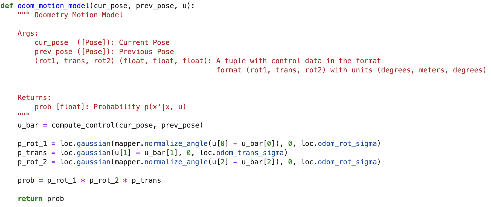

Lab 11 Report
For this lab, we are to implement Bayes filter in a simulation for a robot cart. It's purpose is
to return better sensor readings on a probability model.
Thanks to professor and course staff for providing the robot model and each function signature
of the Bayes filter so we had a straight forward task of realizing Bayes filter. Our task is to
implement five functions and in below order, later functions are helped by previous functions.
compute_control(cur_pose, prev_pose)
odom_motion_model(cur_pose, prev_pose, u)
prediction_step(cur_odom, prev_odom)
sensor_model(obs)
update_step()
compute_control(cur_pose, prev_pose)
Compute control is to compute the translation and rotation before the translation,
and the rotation after the translation, given the current pose and the
previous pose of the robot. Pose contains robot's x y cordinate in meters, and
orientation in degrees. Theory shown in Fig.1 and code shown in Fig.2
Fig.1 Conpute Control Theory
Fig.2 Conpute Control Code
odom_motion_model(cur_pose, prev_pose, u)
Odom motion model is to compute the probability of the current pose given the
current control and previous pose. We uses a gaussian distribution for computing
the prbobality. And to note because our state space for orientation is -180° to 180°
we need to normalize the angles.
Fig.3 Odometer Motion Model Theory

Fig.4 Odometer Motion Model Code
prediction_step(cur_odom, prev_odom)
Now we get to the first step of Bayes Filter, the prediction step as in Fig.5. After getting
the control form previous and current poses, we can use odometer motion model to
predict the probability of arraving at a certain state. We do that by iterating through
every state in the state space and calculate out all the probability. We call this probability
map bel and the previous step bel_bar a belief. And to reduce the computing cost, if current belief
bel is smaller than 0.001, we skip the calculation. And also because we skipped some calculation,
and the probability sum needs to be 1, we normalized the whole table with bel_bar/sum(bel_bar).

Fig.5 Bayes Filter
Fig.6 Prediction Step Code
sensor_model(obs)
This function is to provide the probability of a TOF sensors reading in one rotation given its x-y coordinates,
in other words, how much we trust a sensor's reading at one spot after doing one full rotation with
18 TOF readings. We uses the gaussian distribution again.
Fig.7 Sensor Model Code
update_step()
Finally we arrive at the update step of Bayes Filter shown in Fig.5. We update our current belief
of the probability state map given the sensor model and the prior belief bel_bar. Iterating through
every state again to update the map. Here we normalize the map again in case there are rounding
erros in the sensor model.
Fig.8 Update Step Code
Discussion
Results are shown in above video. You can see that we now have a more accurate reading with Bayes filter's prediction (blue trajectory),
comparing to odometer readings (red trajectory). Though we didn't always have the best belief, you can see from the checker grid, and
also comparing the results with ground truth (green trajectory). This is because we have to discretize our state space. Our state space
isn't tight enough to give a more accurate prediction, but it is wide enough to have a good computing speed. I think this state space can
be more tightly discretized for simulation, but can't say for sure it is not good enough for the on board experiment on the real robot.